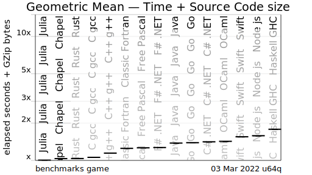
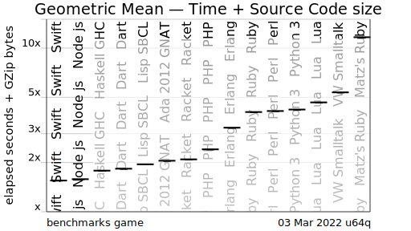
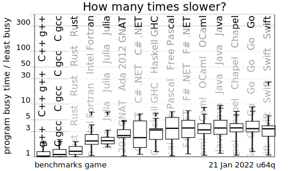
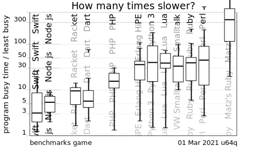
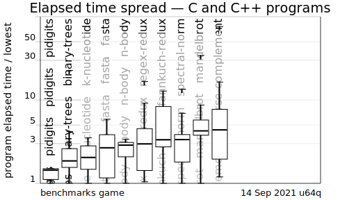
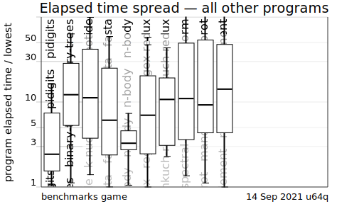
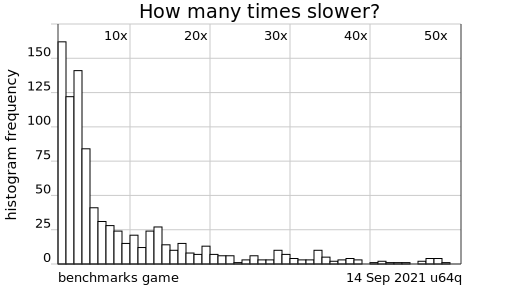

Elapsed seconds plus source code size
Always look at the source code.
How many times worse, the fastest benchmark programs for selected programming language implementations score — compared to the fastest written in any of the programming languages — when the source code size is included in the score.

Programs written for multicore may have more source code. Optimized programs may have more source code. Programs with hand-written vector SIMD may have more source code. Simple sequential programs may have less source code. Programs written in languages designed for multicore may have less source code.

CPU seconds, median and percentiles
We don't know how much work was done to optimize each program.
To fix this, regex crate must be updated or replaced. I spent two weekends on this.
Notice which language implementations had a more than average number of programs contributed.

Notice which box plot IQRs overlap. Notice which spread across too large a range of values for confidence.

Look at the source code and see which of the faster programs use hand written vectorized SIMD. Look and you might see simpler programs written in the same programming language.
Look at the spread from the fastest to the slowest C and C++ programs.


… a pretty solid study on the boredom of performance-oriented software engineers grouped by programming language.
